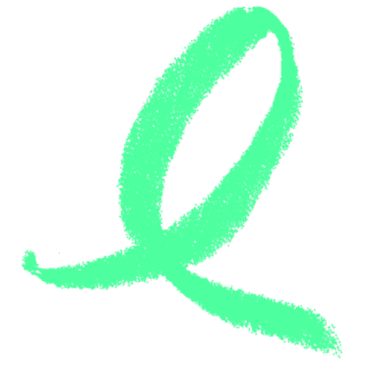

<!doctype html>
<html lang="en">
<head>
<meta charset="utf-8">
<title>ObjectExplorer promo</title>
<link rel="stylesheet" href="./promo.css">
</head>
<body>
<div id="stage">
	<canvas id="screen"></canvas>
	<div id="card" class="card"></div>
	<div id="keys" class="keys"></div>
	<div id="caption" class="caption"></div>
</div>
<script type="module">
// The product film, as one function of time. Nothing animates on its own: scripts/promo.mjs sets the
// clock frame by frame and screenshots each one, so a slow machine cannot drop a frame and the film is
// the same every time it is built. Open it with ?t=12.5 to look at one moment.
//
// Two kinds of cut, one word or line a card and the explorer's own screen, in the Typeframes style. The
// screens are stills the explorer took of itself offscreen, step by step (foldone's
// build/scratch/film/shots.sh, exported by export.py into ./shots with targets.js); the page draws the
// cursor moving and clicking between them, the typing as a reveal of the next still, and the camera
// zooming and panning onto what matters.
//
// Every cut is counted in beats of the music (promo.mjs passes ?tempo= and ?first= from the track's
// .beats.json, written by scripts/promo-beats.py), so another track is one render away.
import { targets } from "./shots/targets.js"

const params = new URLSearchParams(location.search)
const BEAT = 60 / Number(params.get("tempo") ?? 134)
const FIRST = Number(params.get("first") ?? 0)
// the end card is held this long once the last beat is counted: it comes in on the music's last stop, the
// track's own ending lands on its first beat and rings out under it, and the film ends as that does
const END_SECONDS = 3
// a cross-fade between two stills, seconds
const FADE = 0.18
const STAGE = { width: 1280, height: 720 }
const FULL = { x: 0, y: 0, width: 1280, height: 720 }
const STILLS = ["measure_on", "measure_first", "measure_moving", "measure_done", "pdf_marks_before", "pdf_marks_circle_mid", "pdf_marks_circle", "pdf_marks_highlight_mid", "pdf_marks_highlight", "pdf_marks_underline_mid", "pdf_marks_all", "slides_open", "slides_present", "slides_drawing", "slides_next", "usage_size", "usage_cost", "usage_insight", "book_spread", "book_lift", "book_turn_1", "book_turn_2", "book_turn_3", "book_turn_4", "book_next", "start", "documents", "open_factory", "open_washer", "open_amplifier", "open_tour", "open_the-lighthouse-keeper", "open_france", "open_ct-scan", "open_chorale", "open_disk", "open_mailbox", "open_train-stations", "notebook", "sql_empty", "sql_typed", "sql_run", "search_open", "search_typed", "ask_ring", "ask_side", "ask_typed", "ask_answer", "library", "library_tablet", "library_phone"]

const pictures = {}
for (const name of STILLS) {
	const image = new Image()
	image.src = `./shots/${name}.jpg`
	pictures[name] = image
}

function centre(box) {
	return [box.x + box.width / 2, box.y + box.height / 2]
}

// where the cursor points on a tree row: a little into its name, not the middle of the row
function onLabel(name) {
	const box = targets.tree[name]
	return [box.x + Math.min(48, box.width / 3), box.y + box.height / 2]
}

// One cut of the montage: the cursor goes to the file in the tree while the camera pulls back, clicks,
// the file opens and the camera moves onto what it drew. `previous` is the file before it, where the
// cursor and the camera start.
function openFile(file, label, beats, previous) {
	const name = file.replace(/\.[^.]*$/, "")
	const moments = [
		{ at: 0, show: previous === undefined ? "documents" : `open_${previous.replace(/\.[^.]*$/, "")}` },
		{ at: 0, view: previous === undefined ? FULL : targets.content[previous.replace(/\.[^.]*$/, "")], beats: 0 },
		{ at: 0, view: FULL, beats: 0.9 },
		{ at: 0, cursor: previous === undefined ? [700, 420] : onLabel(previous), beats: 0 },
		{ at: 0.1, cursor: onLabel(file), beats: 0.9 },
		{ at: 1.1, click: true },
		{ at: 1.25, show: `open_${name}` },
		{ at: 1.4, view: targets.content[name], beats: 1.1 },
		{ at: 1.3, caption: label, until: beats },
	]
	return { beats, screen: moments }
}

// the two holes measured and the card with the distance
const MEASURE_VIEW = { x: 540, y: 130, width: 740, height: 480 }
// the PDF's tools and its first lines
const MARKS_VIEW = { x: 560, y: 50, width: 700, height: 394 }
// the drawing on the slide
const DRAWING_VIEW = { x: 140, y: 170, width: 1000, height: 500 }

const montage = [
	["factory.glb", "3D models", 8],
	["washer.stp", "CAD parts", 6],
	["amplifier.kicad_pcb", "Circuit boards", 6],
	["tour.pdf", "PDFs", 5],
	["the-lighthouse-keeper.epub", "Ebooks", 6],
	["france.pmtiles", "Maps", 5],
	["ct-scan.dcm", "Medical scans", 5],
	["chorale.mxl", "Music scores", 5],
	["disk.dmg", "Disk images and archives", 5],
	["mailbox.olm", "Mailboxes", 5],
	["train-stations.parquet", "Tables", 5],
].map(function cut([file, label, beats], index, all) {
	return file === "the-lighthouse-keeper.epub" ? bookTurn(beats) : openFile(file, label, beats, index > 0 ? all[index - 1][0] : undefined)
})
// the board measured right after it is opened, the PDF marked up right after it
montage.splice(3, 0, measuring())
montage.splice(5, 0, markingUp())

// measuring on the board: the ruler, a click on one mounting hole, the line following the pointer, a
// click on the other, the distance in the card
function measuring() {
	const from = [targets.measure_from.x, targets.measure_from.y]
	const to = [targets.measure_to.x, targets.measure_to.y]
	const middle = [830, 556]
	const moments = [
		{ at: 0, show: "open_amplifier" },
		{ at: 0, view: targets.content.amplifier, beats: 0 },
		{ at: 0, view: FULL, beats: 0.8 },
		{ at: 0, cursor: [760, 420], beats: 0 },
		{ at: 0.2, cursor: centre(targets.measure_button), beats: 1 },
		{ at: 1.3, click: true },
		{ at: 1.5, show: "measure_on" },
		{ at: 1.7, view: MEASURE_VIEW, beats: 1.2 },
		{ at: 2.2, cursor: from, beats: 1 },
		{ at: 3.3, click: true },
		{ at: 3.4, show: "measure_first", fade: 0.1 },
		{ at: 3.7, cursor: middle, beats: 1.2 },
		{ at: 3.7, show: "measure_moving", wipe: { x: from[0], y: 520, width: middle[0] - from[0] + 40, height: 80 }, characters: 24, beats: 1.2 },
		{ at: 5, cursor: to, beats: 1 },
		{ at: 6.1, click: true },
		{ at: 6.2, show: "measure_done", fade: 0.15 },
		{ at: 1.5, caption: "Measure anything", until: 14 },
	]
	return { beats: 14, screen: moments }
}

// marking up the PDF: Annotate, then a circle round the heading, a highlight and an underline, each
// drawn on by hand as the pointer runs along the words
function markingUp() {
	const moments = [
		{ at: 0, show: "open_tour" },
		{ at: 0, view: targets.content.tour, beats: 0 },
		{ at: 0, view: FULL, beats: 0.8 },
		{ at: 0, cursor: [760, 420], beats: 0 },
		{ at: 0.2, cursor: centre(targets.pdf_annotate), beats: 1 },
		{ at: 1.3, click: true },
		{ at: 1.5, show: "pdf_marks_before" },
		{ at: 1.7, view: MARKS_VIEW, beats: 1.2 },
		{ at: 1.9, cursor: centre(targets.pdf_circle), beats: 0.8 },
		{ at: 2.8, click: true },
		{ at: 3, cursor: [652, 142], beats: 0.6 },
		{ at: 3.7, cursor: [937, 142], beats: 0.8 },
		{ at: 4.5, show: "pdf_marks_circle_mid", fade: 0 },
		{ at: 4.9, show: "pdf_marks_circle", fade: 0.2 },
		{ at: 5.2, cursor: centre(targets.pdf_highlight), beats: 0.8 },
		{ at: 6.1, click: true },
		{ at: 6.3, cursor: [782, 212], beats: 0.6 },
		{ at: 7, cursor: [871, 212], beats: 0.5 },
		{ at: 7.5, show: "pdf_marks_highlight_mid", fade: 0 },
		{ at: 7.9, show: "pdf_marks_highlight", fade: 0.2 },
		{ at: 8.2, cursor: centre(targets.pdf_underline), beats: 0.8 },
		{ at: 9.1, click: true },
		{ at: 9.3, cursor: [782, 316], beats: 0.6 },
		{ at: 10, cursor: [1053, 316], beats: 0.8 },
		{ at: 10.8, show: "pdf_marks_underline_mid", fade: 0 },
		{ at: 11.2, show: "pdf_marks_all", fade: 0.2 },
		{ at: 11.4, cursor: [1120, 420], beats: 1 },
		{ at: 1.5, caption: "Mark up any PDF", until: 16 },
	]
	return { beats: 16, screen: moments }
}

// a deck of slides presented, its second slide a drawing done by hand
const slides = { beats: 16, screen: [
	{ at: 0, show: "slides_open" },
	{ at: 0, view: FULL, beats: 0 },
	{ at: 0, cursor: [760, 420], beats: 0 },
	{ at: 0.2, cursor: centre(targets.deck_present), beats: 1 },
	{ at: 1.3, click: true },
	{ at: 1.5, show: "slides_present", fade: 0.25 },
	{ at: 1.6, cursor: [1250, 700], beats: 1 },
	{ at: 3, keys: ["→"], until: 4.6 },
	{ at: 3.4, show: "slides_drawing", fade: 0.3 },
	{ at: 4.2, view: DRAWING_VIEW, beats: 1.6 },
	{ at: 10.4, keys: ["→"], until: 12 },
	{ at: 10.6, view: FULL, beats: 0.8 },
	{ at: 10.8, show: "slides_next", fade: 0.3 },
	{ at: 1.5, caption: "Slides, with drawings", until: 16 },
] }

// the ebook cut: Peter Rabbit in the library's book, three pages in, on a spread of two pictures; the
// cursor lifts the page's corner and turns it, the turn drawn by the stills caught on the way, then the
// next spread
function bookTurn(beats) {
	const corner = [targets.book_corner.x, targets.book_corner.y]
	const moments = [
		{ at: 0, show: "book_spread" },
		{ at: 0, view: targets.book_spread, beats: 0 },
		{ at: 0, cursor: [760, 420], beats: 0 },
		{ at: 0.2, cursor: corner, beats: 0.9 },
		{ at: 1.1, show: "book_lift", fade: 0.15 },
		{ at: 1.7, click: true },
		{ at: 1.8, show: "book_turn_1", fade: 0 },
		{ at: 1.95, show: "book_turn_2", fade: 0 },
		{ at: 2.1, show: "book_turn_3", fade: 0 },
		{ at: 2.25, show: "book_turn_4", fade: 0 },
		{ at: 2.4, show: "book_next", fade: 0.22 },
		{ at: 2.4, cursor: [corner[0] + 40, corner[1] + 30], beats: 1 },
		{ at: 1, caption: "Ebooks, read as a book", until: beats },
	]
	return { beats, screen: moments }
}

const USAGE_INSIGHT_VIEW = { x: 330, y: 56, width: 950, height: 534 }

// the usage disc: every bucket and folder on one disc, each pole as tall as what it holds; Size, then
// Cost, then the findings circled on it (the made-up example the app ships, never a real account)
const usage = { beats: 15, screen: [
	{ at: 0, show: "usage_size" },
	{ at: 0, view: FULL, beats: 0 },
	{ at: 0, cursor: [760, 520], beats: 0 },
	{ at: 0.3, cursor: centre(targets.usage_cost), beats: 1.2 },
	{ at: 1.7, click: true },
	{ at: 1.9, show: "usage_cost", fade: 0.45 },
	{ at: 2.2, view: targets.usage_disc, beats: 1.6 },
	{ at: 1.9, caption: "Size or monthly cost", until: 8.6 },
	{ at: 7.4, view: FULL, beats: 1 },
	{ at: 7.6, cursor: centre(targets.usage_insight), beats: 1 },
	{ at: 8.8, click: true },
	{ at: 9, show: "usage_insight", fade: 0.3 },
	{ at: 9.3, view: USAGE_INSIGHT_VIEW, beats: 1.4 },
	{ at: 9.3, caption: "See where the money goes", until: 15 },
] }

const NOTEBOOK_VIEW = { x: 340, y: 56, width: 940, height: 400 }
// the query and the seven rows it answered, above where the caption sits
const RESULT_VIEW = { x: 350, y: 70, width: 580, height: 380 }
// the hits: in the ebook's name, 700 lines inside bundle.7z, the letter
const HITS_VIEW = { x: 0, y: 130, width: 620, height: 349 }
const SEARCH_VIEW = { x: 0, y: 24, width: 640, height: 360 }
const RING_VIEW = { x: 30, y: 200, width: 460, height: 260 }
const INPUT_VIEW = { x: 720, y: 360, width: 560, height: 350 }
const ANSWER_TOP = { x: 860, y: 70, width: 420, height: 300 }
const ANSWER_END = { x: 860, y: 320, width: 420, height: 300 }

// One entry per cut, `beats` long. A card has `card` (its colour) and `lines`; `pop` shows its words one
// every that many beats. A screen has `screen`, its moments at beats from its start: `show` a still (a
// cut at 0, else a cross-fade; with `wipe` a box of it revealed over `beats`: typing across, an answer
// coming in down), `view` the box the camera moves onto over `beats`, `cursor` where the pointer goes over
// `beats`, `click`, `caption` (until a beat), `keys` (until a beat).
const scenes = [
	{ beats: 8, card: "white", title: true },
	{ beats: 4, card: "dark", lines: ["Every file."] },
	{ beats: 4, card: "green", lines: ["Opened as itself."] },
	{ beats: 8, screen: [
		{ at: 0, show: "start" },
		{ at: 0, view: FULL, beats: 0 },
		{ at: 0, cursor: [760, 470], beats: 0 },
		{ at: 1, cursor: onLabel("Documents"), beats: 1.4 },
		{ at: 2.6, click: true },
		{ at: 2.8, show: "documents" },
		{ at: 3, caption: "All your files in one window", until: 8 },
	] },
	{ beats: 8, card: "dark", lines: ["From your disk or the cloud"], chips: ["S3", "Azure", "Google Drive", "Dropbox", "OneDrive", "FTP"], pop: 1 },
	usage,
	...montage,
	{ beats: 6, card: "green", lines: ["900+"], small: "kinds of file", size: "huge" },
	{ beats: 18, screen: [
		{ at: 0, show: "open_train-stations" },
		{ at: 0, view: FULL, beats: 0 },
		{ at: 0, cursor: [700, 420], beats: 0 },
		{ at: 0.3, cursor: centre(targets.notebook_button), beats: 1.2 },
		{ at: 1.6, click: true },
		{ at: 1.8, show: "notebook" },
		{ at: 2, view: NOTEBOOK_VIEW, beats: 1.2 },
		{ at: 2.6, cursor: [targets.sql_typed.x + targets.sql_typed.width - 40, targets.editor.y + targets.editor.height / 2], beats: 1 },
		{ at: 3.7, click: true },
		{ at: 3.9, show: "sql_empty" },
		{ at: 4.3, show: "sql_typed", wipe: targets.sql_typed, characters: 103, beats: 5 },
		{ at: 9.6, keys: ["⌘", "Enter"], until: 11.6 },
		{ at: 10.2, show: "sql_run" },
		{ at: 10.4, view: RESULT_VIEW, beats: 1.4 },
		{ at: 1.8, caption: "Ask any table in SQL", until: 10 },
		{ at: 10.2, caption: "Nothing to import first", until: 18 },
	] },
	{ beats: 16, screen: [
		{ at: 0, show: "documents" },
		{ at: 0, view: FULL, beats: 0 },
		{ at: 0, cursor: [700, 420], beats: 0 },
		{ at: 0.2, cursor: centre(targets.search_activity), beats: 1.1 },
		{ at: 1.4, click: true },
		{ at: 1.6, show: "search_open" },
		{ at: 1.8, view: SEARCH_VIEW, beats: 1.2 },
		{ at: 2.2, cursor: [targets.search_query.x + 120, targets.search_query.y + targets.search_query.height / 2], beats: 0.8 },
		{ at: 3.1, click: true },
		{ at: 3.4, show: "search_typed", wipe: targets.search_typed, characters: 6, beats: 1.6 },
		{ at: 5.4, show: "search_typed" },
		{ at: 5.6, view: HITS_VIEW, beats: 1.6 },
		{ at: 5.6, cursor: [300, 640], beats: 1.2 },
		{ at: 1.8, caption: "Search inside every file", until: 9 },
		{ at: 9, caption: "Even inside archives", until: 16 },
	] },
	slides,
	{ beats: 20, screen: [
		{ at: 0, show: "open_train-stations" },
		{ at: 0, view: FULL, beats: 0 },
		{ at: 0, cursor: [700, 420], beats: 0 },
		{ at: 0.2, cursor: onLabel("train-stations.parquet"), beats: 1.2 },
		{ at: 1.5, click: true },
		{ at: 1.7, show: "ask_ring" },
		{ at: 1.8, view: RING_VIEW, beats: 1.1 },
		{ at: 2.6, cursor: centre(targets.gemini), beats: 1 },
		{ at: 3.7, click: true },
		{ at: 3.9, show: "ask_side" },
		{ at: 4, view: INPUT_VIEW, beats: 1.2 },
		{ at: 4.3, cursor: [targets.agent_input.x + targets.agent_input.width - 60, targets.agent_input.y + 60], beats: 0.8 },
		{ at: 5.2, click: true },
		{ at: 5.5, show: "ask_typed", wipe: targets.ask_typed, characters: 44, beats: 4 },
		{ at: 9.6, keys: ["Enter"], until: 11.2 },
		{ at: 10, show: "ask_answer", wipe: targets.ask_answer, down: true, beats: 5 },
		{ at: 10, view: ANSWER_TOP, beats: 1.4 },
		{ at: 13.4, view: ANSWER_END, beats: 2.4 },
		{ at: 10, cursor: [1240, 690], beats: 1.5 },
		{ at: 1.7, caption: "Ask the agent you already use", until: 10 },
		{ at: 10.4, caption: "It reads your files where they are", until: 20 },
	] },
	{ beats: 6, card: "white", lines: ["Mac", "Windows", "Linux"], row: true, pop: 1.5 },
	{ beats: 12, devices: true, caption: "And on iPhone and iPad" },
	{ beats: 4, card: "dark", lines: ["Your files"] },
	{ beats: 5, card: "green", lines: ["never leave your machine."] },
	{ beats: 4, card: "green", lines: ["Any file."] },
	{ beats: 4, card: "dark", lines: ["Any device."] },
	{ beats: 4, card: "grey", lines: ["Nothing uploaded."] },
	{ beats: 6, card: "green", lines: ["Just ObjectExplorer."] },
	{ seconds: END_SECONDS, card: "white", title: true, url: true },
]

// when each cut starts: the first runs from 0 to its last beat, every other one on the beat grid, the
// end card after the last beat
let counted = 0
const starts = scenes.map(function start(scene, index) {
	const at = index === 0 ? 0 : FIRST + counted * BEAT
	counted += scene.beats ?? 0
	return at
})
const MUSIC_END = FIRST + counted * BEAT
const DURATION = MUSIC_END + END_SECONDS

// what reads badly: a caption on screen less than 1.5 s, a card shorter than that
const warnings = []
scenes.forEach(function check(scene, index) {
	const seconds = (scene.beats ?? 0) * BEAT
	if (scene.card !== undefined && scene.seconds === undefined && seconds < 1.5) {
		warnings.push(`cut ${index}: a card of ${seconds.toFixed(2)} s`)
	}
	for (const moment of scene.screen ?? []) {
		if (moment.caption !== undefined && (moment.until - moment.at) * BEAT < 1.5) {
			warnings.push(`cut ${index}: "${moment.caption}" for ${((moment.until - moment.at) * BEAT).toFixed(2)} s`)
		}
	}
})

function clamp(value) {
	return Math.max(0, Math.min(1, value))
}

function easeOut(fraction) {
	return 1 - Math.pow(1 - fraction, 3)
}

function easeInOut(fraction) {
	return fraction < 0.5 ? 4 * fraction * fraction * fraction : 1 - Math.pow(-2 * fraction + 2, 3) / 2
}

// ---- the cards ----

const card = document.getElementById("card")
const caption = document.getElementById("caption")
const keys = document.getElementById("keys")
const canvas = document.getElementById("screen")
const context = canvas.getContext("2d")

// the loop drawn round the name, as by a brush
const LOOP = "M 40 118 C 20 40, 260 8, 520 14 C 760 20, 860 70, 840 120 C 820 178, 560 196, 330 190 C 120 184, 6 160, 30 104 C 46 66, 140 44, 220 40"

function titleMarkup(scene) {
	const url = scene.url ? `<div class="card-url">objectexplorer.com</div>` : ""
	return `<div class="card-title">
		<svg class="card-loop" viewBox="0 0 880 210" width="880" height="210"><path d="${LOOP}" pathLength="1"/></svg>
		
		<span class="card-name">Object<em>Explorer</em></span>
	</div>
	<div class="card-tagline">Open any file. Right where it is.</div>
	${url}`
}

function cardMarkup(scene) {
	let markup = ""
	if (scene.title) {
		markup = titleMarkup(scene)
	}
	else {
		const words = scene.row
			? `<div class="card-line card-row">${scene.lines.map((line) => `<span class="word">${line}</span>`).join("")}</div>`
			: scene.lines.map((line) => `<div class="card-line">${line.split(" ").map((word) => `<span class="word">${word}</span>`).join(" ")}</div>`).join("")
		const small = scene.small ? `<div class="card-small word">${scene.small}</div>` : ""
		const chips = scene.chips ? `<div class="card-chips">${scene.chips.map((chip) => `<span class="chip word">${chip}</span>`).join("")}</div>` : ""
		markup = `<div class="card-words ${scene.size ?? ""}">${words}${small}${chips}</div>`
	}
	return markup
}

function drawCard(scene, index, local) {
	if (card.dataset.index !== String(index)) {
		card.dataset.index = String(index)
		card.className = `card card-${scene.card}`
		card.innerHTML = cardMarkup(scene)
	}
	card.style.opacity = "1"
	// the words come up one after another; with `pop` one every that many beats, the chips one a beat
	const words = [...card.querySelectorAll(".word")]
	const chipStart = words.filter((word) => word.classList.contains("chip") === false).length
	words.forEach(function show(word, order) {
		let delay = order * 0.07
		if (word.classList.contains("chip")) {
			delay = 0.6 + (order - chipStart) * (scene.pop ?? 1) * BEAT
		}
		else if (scene.pop !== undefined) {
			delay = order * scene.pop * BEAT
		}
		const shown = easeOut(clamp((local - delay) / 0.28))
		word.style.opacity = String(shown)
		word.style.transform = `translateY(${(1 - shown) * 46}px)`
	})
	const drift = 1 + local * 0.012
	const holder = card.querySelector(".card-words")
	if (holder !== null) {
		holder.style.transform = `scale(${drift})`
	}
	const loop = card.querySelector(".card-loop path")
	if (loop !== null) {
		loop.style.strokeDashoffset = String(scene.url ? 1 - easeInOut(clamp(local / 0.7)) : 1 - easeInOut(clamp((local - 0.3) / 1.1)))
		const title = card.querySelector(".card-title")
		const shown = easeOut(clamp(local / (scene.url ? 0.2 : 0.5)))
		title.style.opacity = String(shown)
		title.style.transform = `scale(${0.94 + 0.06 * shown + local * 0.006})`
		// the end card shows its address at once, so it is on screen long enough to read
		const quick = scene.url === true
		const tagline = card.querySelector(".card-tagline")
		tagline.style.opacity = String(easeOut(clamp((local - (quick ? 0.1 : 0.9)) / (quick ? 0.25 : 0.5))))
		const url = card.querySelector(".card-url")
		if (url !== null) {
			url.style.opacity = String(easeOut(clamp((local - 0.2) / 0.25)))
			// a small bump as the music's ending lands, one beat in
			const since = local - BEAT
			const bump = since >= 0 && since < 0.35 ? Math.sin(since / 0.35 * Math.PI) * 0.06 : 0
			url.style.transform = `scale(${1 + bump})`
		}
	}
}

// ---- the screen ----

// the camera on a box of the window: scaled to fit it, its middle in the frame's middle. The window always
// fills the whole frame: never smaller than it, and moved in from an edge rather than show past it
function camera(view) {
	const scale = Math.min(2.3, Math.min(STAGE.width / view.width, STAGE.height / view.height))
	return held({ x: view.x + view.width / 2, y: view.y + view.height / 2, scale })
}

function held(shot) {
	const scale = Math.max(1, shot.scale)
	const halfWidth = STAGE.width / 2 / scale
	const halfHeight = STAGE.height / 2 / scale
	return {
		x: Math.min(STAGE.width - halfWidth, Math.max(halfWidth, shot.x)),
		y: Math.min(STAGE.height - halfHeight, Math.max(halfHeight, shot.y)),
		scale,
	}
}

// the moments of one kind, in order, with the one in force at `beat` and the one before it
function latest(moments, key, beat) {
	const list = moments.filter((moment) => moment[key] !== undefined)
	let index = -1
	list.forEach(function find(moment, order) {
		if (moment.at <= beat) {
			index = order
		}
	})
	return { list, index }
}

function viewAt(moments, beat) {
	const { list, index } = latest(moments, "view", beat)
	let shot = camera(FULL)
	if (index >= 0) {
		const moment = list[index]
		const target = camera(moment.view)
		const from = index > 0 ? camera(list[index - 1].view) : target
		const progress = moment.beats > 0 ? easeInOut(clamp((beat - moment.at) / moment.beats)) : 1
		shot = held({
			x: from.x + (target.x - from.x) * progress,
			y: from.y + (target.y - from.y) * progress,
			// a zoom feels even when the scale moves by the same factor each frame, not the same amount
			scale: from.scale * Math.pow(target.scale / from.scale, progress),
		})
	}
	return shot
}

function cursorAt(moments, beat) {
	const { list, index } = latest(moments, "cursor", beat)
	let point = undefined
	if (index >= 0) {
		const moment = list[index]
		const from = index > 0 ? list[index - 1].cursor : moment.cursor
		const progress = moment.beats > 0 ? easeInOut(clamp((beat - moment.at) / moment.beats)) : 1
		point = [from[0] + (moment.cursor[0] - from[0]) * progress, from[1] + (moment.cursor[1] - from[1]) * progress]
	}
	return point
}

// the stills drawn at `beat`, bottom first: the one shown, over what it fades in on or is revealed over
function layersAt(shows, index, beat) {
	const moment = shows[index]
	let layers = []
	if (moment.wipe !== undefined) {
		const progress = clamp((beat - moment.at) / moment.beats)
		const below = index > 0 ? layersAt(shows, index - 1, Infinity) : []
		layers = below.concat([{ still: moment.show, alpha: 1, wipe: moment, progress }])
	}
	else {
		const seconds = moment.fade ?? FADE
		const fade = moment.at === 0 || seconds === 0 ? 1 : clamp((beat - moment.at) * BEAT / seconds)
		const below = fade < 1 && index > 0 ? layersAt(shows, index - 1, Infinity) : []
		layers = below.concat([{ still: moment.show, alpha: fade }])
	}
	return layers
}

// the box of a still revealed so far: typing goes across a character at a time, an answer comes in down
function revealed(wipe, progress) {
	const box = wipe.wipe
	let shown = { x: box.x, y: box.y, width: box.width, height: box.height }
	if (wipe.down) {
		shown.height = box.height * easeOut(progress)
	}
	else {
		const characters = wipe.characters ?? 20
		shown.width = box.width * Math.floor(progress * characters) / characters
	}
	return shown
}

function roundedRectangle(x, y, width, height, radius) {
	context.beginPath()
	context.moveTo(x + radius, y)
	context.arcTo(x + width, y, x + width, y + height, radius)
	context.arcTo(x + width, y + height, x, y + height, radius)
	context.arcTo(x, y + height, x, y, radius)
	context.arcTo(x, y, x + width, y, radius)
	context.closePath()
}

function background() {
	const gradient = context.createLinearGradient(0, 0, 0, STAGE.height)
	gradient.addColorStop(0, "#f3f6f3")
	gradient.addColorStop(1, "#dfe8e1")
	context.fillStyle = gradient
	context.fillRect(0, 0, STAGE.width, STAGE.height)
	const glow = context.createRadialGradient(STAGE.width * 0.8, STAGE.height * 0.1, 0, STAGE.width * 0.8, STAGE.height * 0.1, 700)
	glow.addColorStop(0, "rgba(61, 204, 112, 0.22)")
	glow.addColorStop(1, "rgba(61, 204, 112, 0)")
	context.fillStyle = glow
	context.fillRect(0, 0, STAGE.width, STAGE.height)
}

// the macOS pointer: black with a white rim, its tip at the point
function drawPointer(x, y, pressed) {
	const size = pressed ? 1.25 : 1.4
	context.save()
	context.translate(x, y)
	context.scale(size, size)
	context.beginPath()
	context.moveTo(0, 0)
	context.lineTo(0, 17)
	context.lineTo(4.2, 13.2)
	context.lineTo(7, 19.6)
	context.lineTo(10, 18.4)
	context.lineTo(7.3, 12.2)
	context.lineTo(12.6, 12.2)
	context.closePath()
	context.shadowColor = "rgba(0, 0, 0, 0.35)"
	context.shadowBlur = 4
	context.shadowOffsetY = 1.5
	context.lineJoin = "round"
	context.lineWidth = 1.6
	context.strokeStyle = "#ffffff"
	context.stroke()
	context.shadowColor = "transparent"
	context.fillStyle = "#111111"
	context.fill()
	context.restore()
}

function drawScreen(scene, local) {
	const beat = local / BEAT
	const moments = scene.screen
	const shot = viewAt(moments, beat)
	context.fillStyle = "#1e1e1e"
	context.fillRect(0, 0, STAGE.width, STAGE.height)
	context.save()
	context.translate(STAGE.width / 2, STAGE.height / 2)
	context.scale(shot.scale, shot.scale)
	context.translate(-shot.x, -shot.y)
	context.save()
	const { list, index } = latest(moments, "show", beat)
	const layers = index >= 0 ? layersAt(list, index, beat) : []
	for (const layer of layers) {
		// the input emptied first, so what it showed before (a placeholder) does not peek out past the typing
		if (layer.wipe !== undefined && layer.wipe.wipe.blank !== undefined) {
			const box = layer.wipe.wipe
			context.fillStyle = box.blank
			context.fillRect(box.x, box.y, box.width, box.height)
		}
		context.save()
		context.globalAlpha = layer.alpha
		if (layer.wipe !== undefined) {
			const box = revealed(layer.wipe, layer.progress)
			context.beginPath()
			context.rect(box.x, box.y, box.width, box.height)
			context.clip()
		}
		context.drawImage(pictures[layer.still], 0, 0, STAGE.width, STAGE.height)
		context.restore()
		// the caret at the end of what is typed so far
		if (layer.wipe !== undefined && layer.wipe.down !== true && layer.progress < 1) {
			const box = revealed(layer.wipe, layer.progress)
			context.fillStyle = "#e8e8e8"
			context.fillRect(box.x + box.width, box.y + 3, 1.2, box.height - 6)
		}
	}
	context.restore()
	context.restore()
	// the pointer and its clicks, the same size whatever the zoom
	const point = cursorAt(moments, beat)
	if (point !== undefined) {
		const x = STAGE.width / 2 + (point[0] - shot.x) * shot.scale
		const y = STAGE.height / 2 + (point[1] - shot.y) * shot.scale
		let pressed = false
		for (const moment of moments.filter((item) => item.click)) {
			const since = (beat - moment.at) * BEAT
			if (since >= 0 && since < 0.45) {
				const grow = easeOut(since / 0.45)
				context.beginPath()
				context.arc(x, y, 6 + grow * 24, 0, Math.PI * 2)
				context.strokeStyle = `rgba(61, 204, 112, ${0.9 * (1 - grow)})`
				context.lineWidth = 4
				context.stroke()
				pressed = pressed || since < 0.12
			}
		}
		drawPointer(x, y, pressed)
	}
}

// the library on every kind of screen: the desktop's window, an iPad and an iPhone, each sliding up in turn
function drawDevices(local) {
	background()
	const devices = [
		{ still: "library", x: 40, y: 170, width: 640, height: 360, radius: 12, bezel: 0, delay: 0 },
		{ still: "library_tablet", x: 726, y: 150, width: 294, height: 392, radius: 20, bezel: 12, delay: 1 },
		{ still: "library_phone", x: 1066, y: 162, width: 172, height: 373, radius: 26, bezel: 9, delay: 2 },
	]
	for (const device of devices) {
		const shown = easeOut(clamp((local - device.delay * BEAT) / 0.5))
		const lift = (1 - shown) * 120 - local * 4
		context.save()
		context.globalAlpha = shown
		context.translate(0, lift)
		context.shadowColor = "rgba(10, 30, 18, 0.35)"
		context.shadowBlur = 50
		context.shadowOffsetY = 20
		roundedRectangle(device.x - device.bezel, device.y - device.bezel, device.width + device.bezel * 2, device.height + device.bezel * 2, device.radius + device.bezel)
		context.fillStyle = "#0d0f0e"
		context.fill()
		context.shadowColor = "transparent"
		roundedRectangle(device.x, device.y, device.width, device.height, device.radius)
		context.clip()
		context.drawImage(pictures[device.still], device.x, device.y, device.width, device.height)
		context.restore()
	}
}

function drawCaption(text, shown, key) {
	if (caption.dataset.key !== key) {
		caption.dataset.key = key
		caption.innerHTML = text === "" ? "" : `<span>${text}</span>`
	}
	caption.style.opacity = String(shown)
	caption.style.transform = `translate(-50%, ${(1 - shown) * 30}px)`
}

function drawKeys(list, shown, key) {
	if (keys.dataset.key !== key) {
		keys.dataset.key = key
		keys.innerHTML = list.map((name) => `<span class="key">${name}</span>`).join("")
	}
	keys.style.opacity = String(shown)
	keys.style.transform = `translate(-50%, ${(1 - shown) * -20}px) scale(${0.9 + 0.1 * shown})`
}

// the caption or keys of a cut at `beat`: shown from `at` to `until`, coming up and going quickly
function overlay(moments, key, beat) {
	let found = { value: undefined, shown: 0, key: "" }
	moments.forEach(function find(moment, order) {
		if (moment[key] !== undefined && beat >= moment.at && beat < moment.until) {
			const coming = clamp((beat - moment.at) * BEAT / 0.25)
			const going = clamp((moment.until - beat) * BEAT / 0.2)
			found = { value: moment[key], shown: easeOut(Math.min(coming, going)), key: `${order}` }
		}
	})
	return found
}

function renderFrame(time) {
	const at = Math.max(0, Math.min(time, DURATION - 0.001))
	const ratio = window.devicePixelRatio || 1
	if (canvas.width !== Math.round(STAGE.width * ratio)) {
		canvas.width = Math.round(STAGE.width * ratio)
		canvas.height = Math.round(STAGE.height * ratio)
	}
	context.setTransform(ratio, 0, 0, ratio, 0, 0)
	context.imageSmoothingEnabled = true
	context.imageSmoothingQuality = "high"
	let index = 0
	starts.forEach(function find(start, order) {
		if (start <= at) {
			index = order
		}
	})
	const scene = scenes[index]
	const local = at - starts[index]
	const beat = local / BEAT
	let moments = []
	if (scene.card !== undefined) {
		drawCard(scene, index, local)
		canvas.style.opacity = "0"
	}
	else {
		card.style.opacity = "0"
		canvas.style.opacity = "1"
		if (scene.devices) {
			drawDevices(local)
			moments = [{ at: 0.6, caption: scene.caption, until: scene.beats }]
		}
		else {
			drawScreen(scene, local)
			moments = scene.screen
		}
	}
	const words = overlay(moments, "caption", beat)
	drawCaption(words.value ?? "", words.shown, `${index}:${words.key}`)
	const pressed = overlay(moments, "keys", beat)
	drawKeys(pressed.value ?? [], pressed.shown, `${index}:${pressed.key}`)
}

window.promoDuration = DURATION
window.promoScenes = starts
window.promoMusicEnd = MUSIC_END
window.promoWarnings = warnings
window.renderFrame = renderFrame
// every picture decoded and the fonts loaded before the first frame is asked for, or a cut lands on
// an empty box
const mark = new Image()
mark.src = "../assets/mark.png"
window.promoReady = Promise.all([...Object.values(pictures), mark].map((picture) => picture.decode().catch(() => undefined)))
	.then(() => document.fonts.ready)
	.then(() => renderFrame(Number(params.get("t") ?? 0)))
</script>
</body>
</html>
